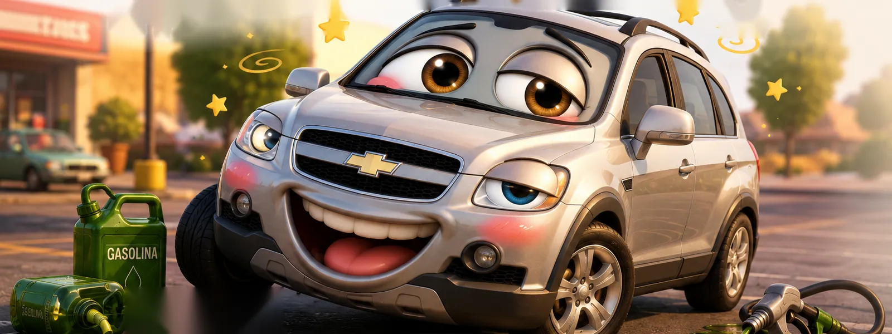
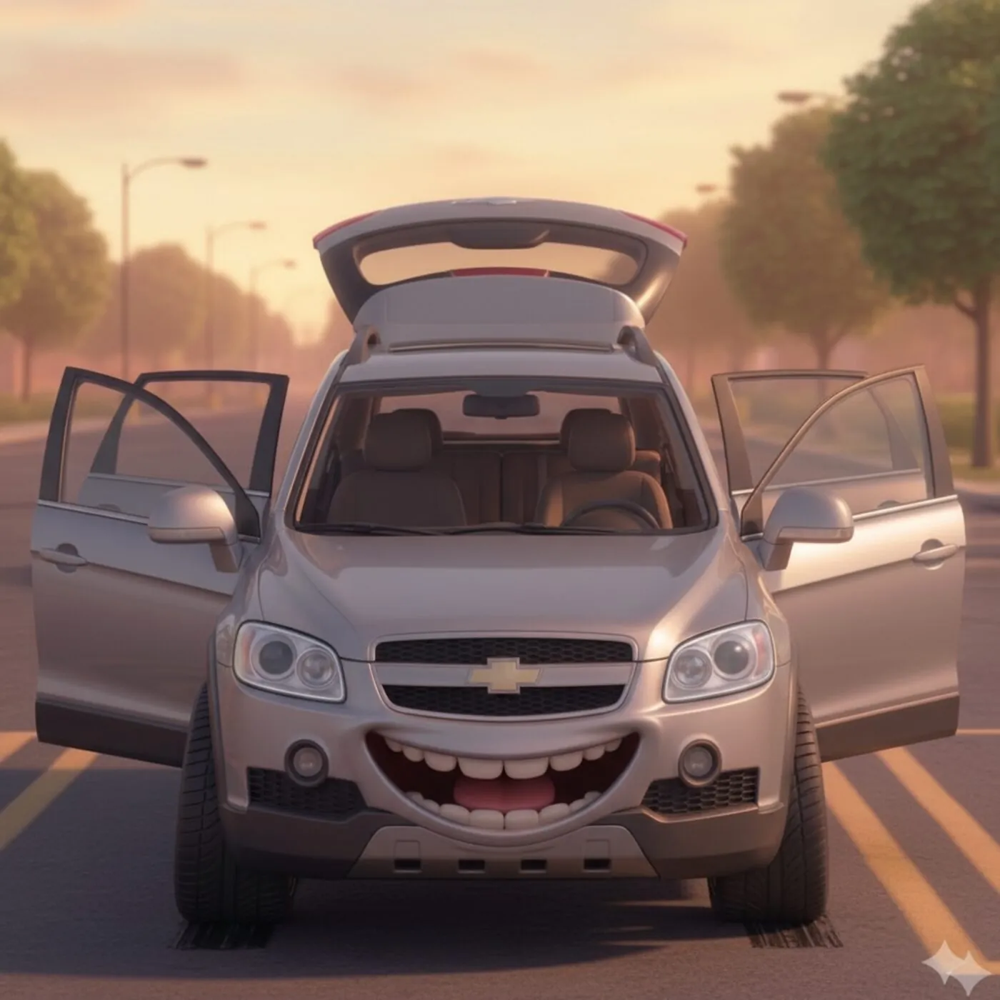

Chevrolet Captiva 2011/12 · 2.4 Ecotec · Automática
Tô vendendo… Quer comprar?

Espaço de sobra, câmbio automático e uma sede que eu não vou esconder: 7,2 km/l na cidade.
Total a pagar
R$ 40.000
negociável · só à vista
O carrão
Antes da confissão, o currículo.
Que ele bebe, você já sabe. Agora olha o que vem junto com a sede.

-
Couro que esquenta, ar que gela
Bancos de couro com aquecimento nos dois da frente e ar-condicionado funcionando. Julho no Cerrado amanhece a 10 °C e setembro vira deserto: ele resolve os dois. O do motorista ainda tem ajuste lombar, e a sua coluna vai sentir falta dele.
-
Espaço de mudança
821 litros de porta-malas e 5 lugares. Cabe a feira do mês, a mala da viagem e a culpa de não ter comprado antes.
-
Câmbio automático de 6 marchas
Com modo manual (+/−) pra quando bater a vontade de ser piloto. No trânsito da EPTG, a sua perna esquerda agradece.
-
Piloto automático
Trava a velocidade na estrada e você só conversa. É lá que ele se comporta melhor: 9,7 km/l.
-
Engate
Puxa carretinha, reboque ou a mudança daquele amigo que jurou que era “pouca coisa”.
-
Tecnologia de 2011 que ainda dá conta
Câmera de ré, freio de mão elétrico e computador de bordo. Este último mostra o consumo sem filtro nenhum, coitado.
Ficha técnica
- Motor
- 2.4 Ecotec 16V · 185 cv · gasolina
- Câmbio
- automático, 6 marchas, com modo manual
- Tração
- dianteira
- Quilometragem
- 179.044 km
- Porta-malas
- 821 L
- Tanque
- 73 L (ele precisa)
- Lugares
- 5
- Som
- rádio original de fábrica